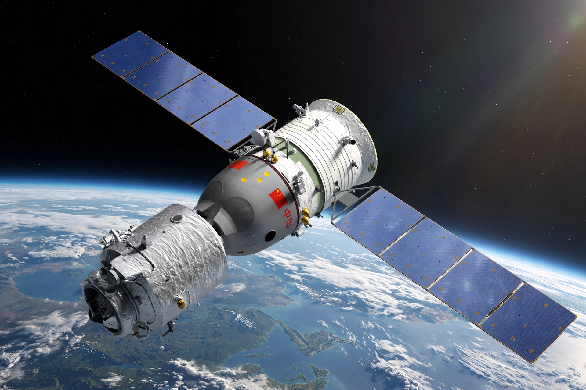

Shenzhou (spacecraft)
From Wikipedia, the free encyclopedia
| Shenzhou (spacecraft) | |
|---|---|
| Country | China |
| Operator | China Manned Space Agency |
| First flight | 19 November 1999 (uncrewed) |
| First crewed flight | 15 October 2003 (Yang Liwei) |
| Launch vehicle | Long March 2F |

Shenzhou in orbit (artist's impression).Shenzhou (Chinese: 神舟, "divine vessel") is a Chinese crewed spacecraft developed for the China Manned Space Program. Closely modelled on the Russian Soyuz layout — orbital module, reentry capsule, and service module — but larger, it has carried Chinese taikonauts since Yang Liwei's first flight on Shenzhou 5 in October 2003, which made China the third country to launch humans into space independently.
Unlike Soyuz, Shenzhou's orbital module has its own solar panels and can remain in orbit as a free-flying module after the capsule returns. Later versions added rendezvous and docking systems for missions to the Tiangong space stations.
Missions
Shenzhou 6 (2005) carried two crew for five days; Shenzhou 7 (2008) featured China's first spacewalk, by Zhai Zhigang; Shenzhou 8 (2011, uncrewed) and 9 (2012, including China's first woman in space, Liu Yang) docked with the Tiangong-1 laboratory. From Shenzhou 12 (2021) the type began regular crew rotations to the Tiangong space station, with missions lasting about six months and a young average crew age reflecting the programme's expansion.
A next-generation crewed spacecraft, named Mengzhou ("dream vessel"), is in development for lunar missions, while Shenzhou continues station operations.
See also
China Manned Space Agency · Tiangong space station · Zhai Zhigang · Soyuz (spacecraft)